Big Island Trip
Nov 2 - 23. 3 week trip to Big Island. We visited right after Hawaii was open to tourists again since covid started.
We stayed at 3 different places, Kailua-Kona, Volcano and Puako, drove around the whole island in our rental car.
Probably one of my favorite travel destinations. Hiked a lot, snorkeled a lot, went on a night snorkeling tour to see Manta Rays, they were huge.
Very memorable experience crossing a river at Waipi’o Valley. We saw wild horses there.
Hilo with it’s fresh produce market is a fun town to visit, we loved Two Ladies Kitchen’s mochi.
Walked through the middle of the crater of Kilauea Iki in Volcano National Park. Steam was still coming out of the ground.
We had Kaumana Caves all to ourselves. It’s so dark inside I could not see my own hands and felt that we had to whisper to each other even though there’s no one else. A bit spooky.
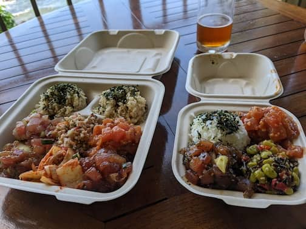 From Da Poke Shack. So good we had it twice
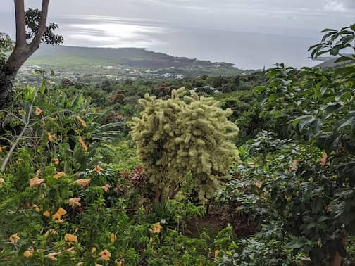 View from The Coffee Shack. Their Lilikoi cheesecake is yummy
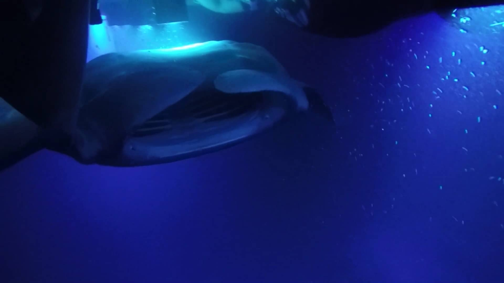 Night snorkel tour to see Manta Rays. They got really close to us
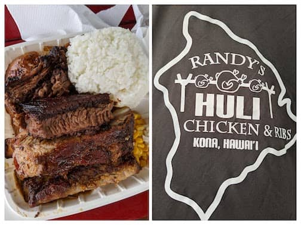 A local bbq place we found by chance. Delicious
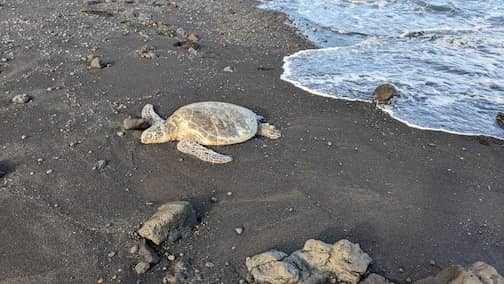 One of the many turtles we saw in Hawaii. Punalu’u Black Sand beach
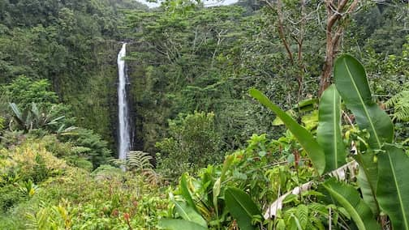 Akaka Falls State Park
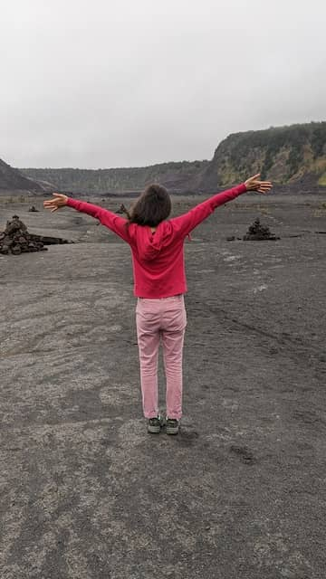 So cool to stand in the middle of Kilauea Iki crater. Can still see steam coming out
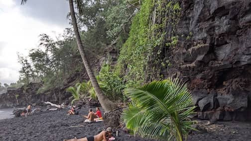 Kahena Black Sand beach. Very chill vibes
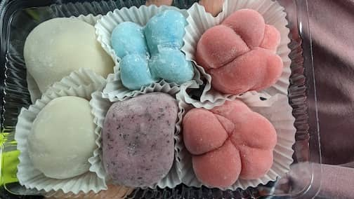 Two Ladies Kitchen’s mochi
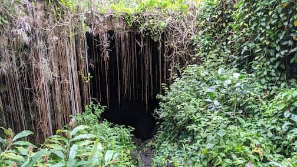 Entrance to the pitch dark Kaumana Caves
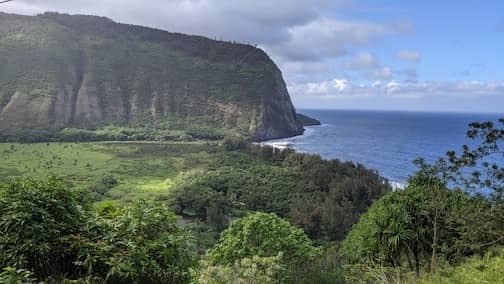 Waipi’o Valley. So fun crossing the river
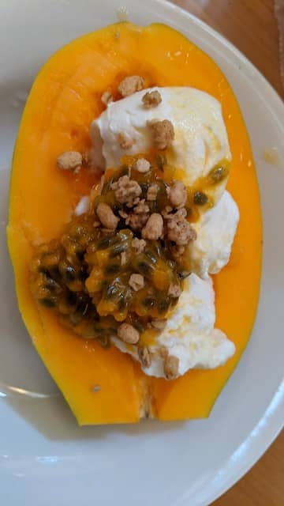 We would buy these papayas from road side stalls, 3 for $5. Ate it with yogurt, passionfruit and granola